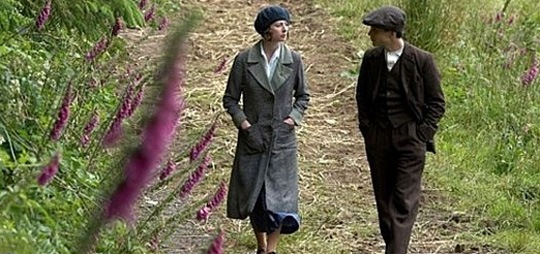

不太敢妄谈历史的，中学时历史就不好，那么多的年代始终记不住。即使是今天想说的这部《风吹麦浪》，也是在翻了翻资料，看了看别人的背景介绍之后才知道这个一直被自己号称喜爱的爱尔兰，诞生了萧伯纳、王尔德，U2，The Cranberries的国度，有着什么样的过去，又有着什么样的现在。 爱尔兰，同中国一样，有着5000多年的历史。爱尔兰共和国于1922年从英国殖民统治下独立出来，但到现在仍有北方六郡由英国行使主权，称为北爱尔兰。曾在爱尔兰独立战争中以爱尔兰统一为目标的爱尔兰共和军，现在则被当作恐怖主义。 这至少是一段不愿被英国人提及的历史，一场民族独立战争究竟是怎样演变为一场内战，这就是《风吹麦浪》，荣获2006金棕榈最佳影片奖的电影，要讲述的故事。影片将宏大的历史背景浓缩在一对爱尔兰兄弟Damien和Teddy身上，从共同对抗英国侵略者到兄弟俩反目成仇。战争夺走的不仅是家园，还有他们的纯真。 Damien临死前说：I tried not to get into this war, and did, and now try to get out and can’t.我曾经想逃避这场战争，却没能做到；如今我想脱身却已不能。 历史随尘埃而去，如同被风吹过的麦浪，汹涌澎湃，过后却又了然无声。影片中那大片大片的麦地，绿得让人陶醉，同时也让人心碎。爱尔兰老人在风中吟唱着爱尔兰民谣《The Wind That Shakes the Barley》也成为了永恒的镜头。 值得一提的是，导演是英国本土人士，这样的勇气实在是我们一直都缺乏的。感谢这部影片，让我得以有机会回顾爱尔兰那段不堪的历史。